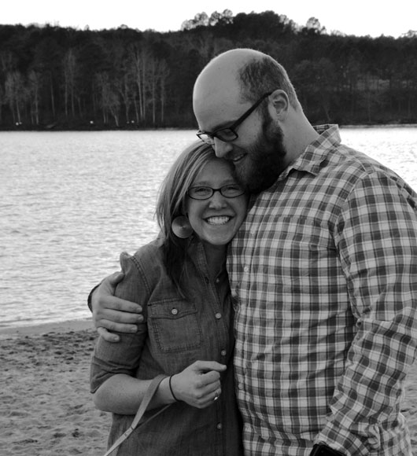
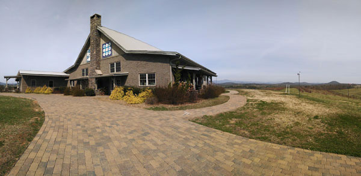

MEET THE BEAUTIFUL BRIDE & GROOM

ERIN JAMIESON
Best Future Bride
From Greer, SC. Clemson University graduate, Go Tigers.
Loves crafting, DIY projects, the outdoors, running, and her pup Reece.
WILL POLLEY
Most Blessed Fiancé
From Mobile, AL. Auburn University graduate, Go Tigers.
Loves Southern food, the outdoors, DIY projects, ultimate frisbee, and his puppy Stella.
HOW WE MET
Erin and Will met through mutual friends while on staff at NewSpring Church in December of 2012. Will had been on staff for a touch over a year—Erin had just started as an apprentice a few months before. However, they didn’t “hit it off” until November of 2013. Will describes the refining time before that faithful November night as a season in the wilderness. If you saw the beard Will grew, you'd be inclined to agree. Erin saw past Will's grizzly bear wilderness exterior—she saw the teddy bear hiding. After a few winding roads and bumps along the way, Will finally asked Erin on a date and as the saying goes—the rest is history.
THE ENGAGEMENT
Will is terrible at surprising Erin—he just gets excited about gifts and is a terrible liar. Needless to say, surprising Erin with "the question" was going to be a challenging endeavor. Will had a great plan to ask Mr. Jamieson for permission to marry her. After an afternoon of woodworking with him, Will made a tragic mistake in his attempt at secrecy—he answered his phone. Just then, the family dog, Annabelle, let out an ear-piercing bark. Erin instantly knew the bark. Will tried to craft a story to account for the bark, but only could come up with "No, that wasn't Annabelle...gotta go...bye." Very smooth, secret-agent man.
Fast-forward a couple weeks, which included a few more very bad attempts at secrecy, to March 8th, 2014. It was one of the first warm Saturdays of the Spring. Erin and Will spent the day outside finishing a pallet project, throwing the frisbee, and laying in the grass—soaking up the sun. While she got ready for the surprise of the evening, Will made dinner for Erin. After a quiet dinner, they took the dogs for what Will said was a trip to the dike at Clemson. Erin knew something was up. They watched the sunset on the beach at the Rowing Center, and then Will turned to Erin and told her that he wanted to be best friends forever, got down on one knee, and asked her to marry him.

THE WEDDING VENUE
CEREMONY
Chattooga Belle Farm
454 Damascus Church Road
Long Creek, SC
Friday, September 19, 2014
6:00 PM at the Barn
Dinner and Dancing to follow.
The Count Up
Chattooga Belle Farm
Located in Long Creek, SC, the farm offers spectacular views of the Blue Ridge Mountains and foregrounds of working vineyards and orchards.
THE BRIDAL PARTY
Bridesmaids
Mary Ellyn Virgo
Stefanie Taphouse
Shelly Steenwyk
Alison Stall
Shelly Nichols
Groomsmen
Craig Bansbach
Sam Mitchell
Travis Lynes
Andrew Horton
Zach Furr
RSVP
We can't wait to see you!
Registries
Area Accommodations
Hotels
Hampton Inn & Suites Seneca-Clemson Area
1011 East North 1st Street
Seneca, SC 29768
(864) 482-2900
$129
Holiday Inn Express
1381 Tiger Boulevard
Clemson, SC 29631
(864) 654-9410
$114
Courtyard by Marriott
201 Canoy Lane
Clemson, SC 29631
(864) 654-8833
$129
Directions
From Atlanta, GA
- Take I-85 North to Exit 19A in Anderson, South Carolina.
- Follow From Anderson Directions.
From Anderson (Exit 19A on I-85)
- Take Clemson Blvd (US 76) North toward Clemson.
- Turn left onto Tiger Blvd (US 123). There will be an Ace Hardware in front of you.
- Take Tiger Blvd (US 123 and US 76) all the way to Westminster, SC. You will pass through Clemson and Seneca
- After passing through Westminster, follow the signs for US 76.
- Follow 76 to Long Creek, SC - 12.6 miles.
- Turn left on Damascus Church Road (there is a sign for Chattooga Belle Farm).
- Chattooga Belle Farm is 0.6 mile on the right.
From Greenville, SC
- Take US 123 to Clemson, SC.
- Take Tiger Blvd (US 123 and US 76) all the way to Westminster, SC. You will pass through Clemson and Seneca
- After passing through Westminster, follow the signs for US 76.
- Follow 76 to Long Creek, SC - 12.6 miles.
- Turn left on Damascus Church Road (there is a sign for Chattooga Belle Farm).
- Chattooga Belle Farm is 0.6 mile on the right.